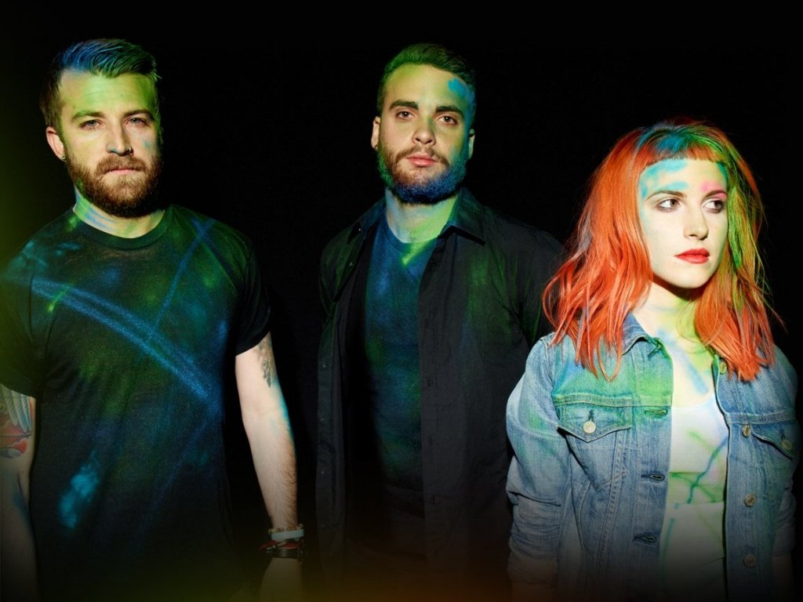

ABOUT THE BAND
2005 · The band just started out with "All we know is falling" debuting in 26th of July. The name "Paramore" goes back to the birth name of the bassist of the band. The band members liked the name so much that they adopted the name for the band. The band style is alternative-rock but has changed over the course of the band's lifetime.
2013 · The band had very good releases such as "RIOT" from 2007 with their hit track "Misery Business". Altough they had good success they wanted to go a bit abroad with their style so they released a new studio album called "Paramore". It still utilizes their alternative-rock roots but they incorporated a bit of freestyle regarding some tracks.
Also some former band members left.
2017 · After a long time without any major release the band decided to make another studio album. This time though they really altered their style to a mixture of new wave, pop rock, synth-pop and power pop. The sum of this is "After laughter" which released in 2017. Some first-day-fans were dishearted by the style change but generally the change was received positively. With "Hard Times" - which is counting 94 million views on Youtube for the moment this site is made - is remarkable.
Also a former member that once left the band - Zac Farro - has rejoined the band to be the drummer again.
MEET THE BAND
Hayley Williams · She is the beating heart of the band. With her voice she powers all the music of Paramore. Through her energetic self and authentic personality she brings the mood into every concert.
Taylor York · He plays many roles including the guitar, drums and sometimes the role model for the ladies. He's constantly changing his style for the better but had settled down for the curly hair look. Coupled with a guitar he becomes something special on the stage.
Zac Farro · He's the younger brother of the now former band member - Josh Farro. He's ruling on the drums with his unique style. "I really dig thoses glasses" - said once a random girl.